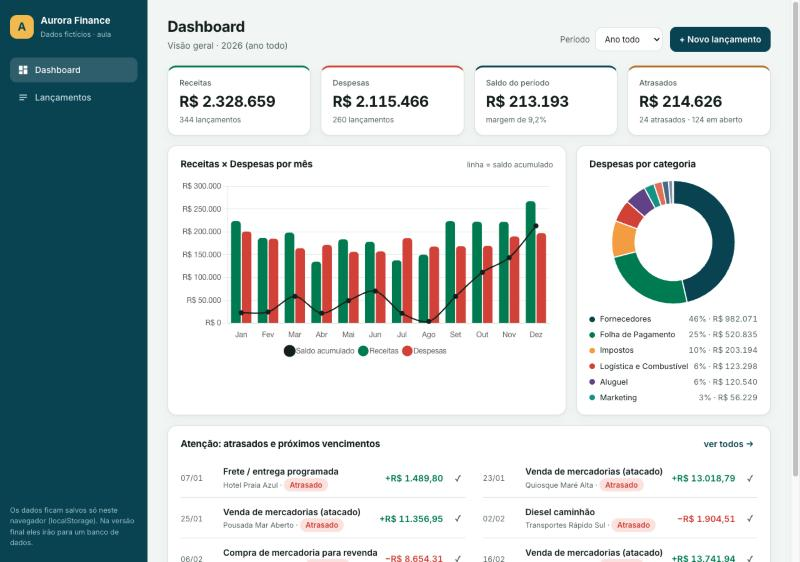
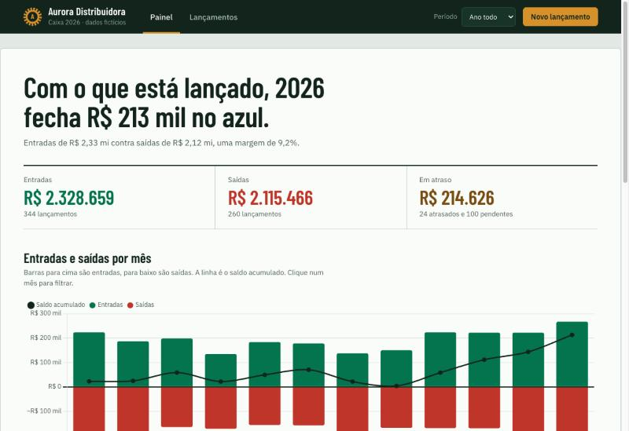
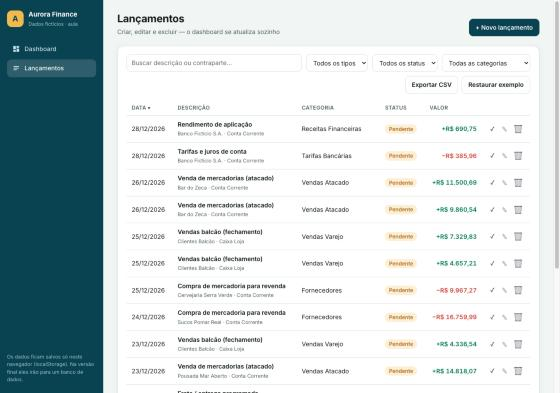
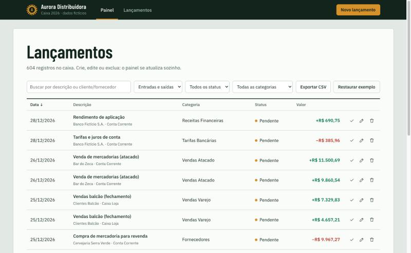

Um passo a passo com o Claude para quem nunca programou. Do arquivo de Excel a um painel com cadastro de lançamentos.
Aula mão na massa. A empresa e os números são fictícios.
Ela guarda tudo. Mas ler, conferir e mexer nela dá trabalho.
| Data | Descrição | Status | Valor (R$) |
|---|---|---|---|
| 02/03/2026 | Venda atacado, Bar do Zeca | Liquidado | 9.120,40 |
| 05/03/2026 | Folha 03/2026 | Liquidado | 42.310,77 |
| 06/03/2026 | Compra de mercadoria | Liquidado | 11.804,15 |
| 10/03/2026 | Aluguel do galpão | Liquidado | 9.800,00 |
| 12/03/2026 | Vendas balcão | Liquidado | 3.402,90 |
| 16/03/2026 | Energia elétrica + água | Pendente | 3.655,12 |
| 20/03/2026 | Simples Nacional (DAS) | Atrasado | 16.240,00 |
| 23/03/2026 | Frete programado | Liquidado | 1.180,00 |
| Total de receitas do mês | #REF! | ||
Diga o objetivo em português, com o máximo de contexto.
O Claude escreve os arquivos: planilha, código, textos.
Ele abre no navegador, clica e confere os números.
Você pede mudanças pequenas, uma de cada vez.
E volta ao começo quantas vezes precisar. É assim nos seis passos a seguir.
Antes de gerar qualquer coisa, peça ao Claude para planejar com você.
Por que funcionaPlanejar antes evita refazer depois.
Você pede
Quero uma aula prática de finanças com dados fictícios. Cenário: uma distribuidora de bebidas. Quais colunas um fluxo de caixa precisa ter? Responda em tabela e não gere dados ainda.
O Claude entrega
Receitas: vendas no atacado, no varejo e entregas. Despesas: fornecedores, folha, aluguel, impostos, frota, marketing.
Dados inventados, mas com regras de empresa de verdade: contas fixas, estação do ano, atrasos.
Por que funcionaCom a semente fixa, toda a turma vê os mesmos números.
Você pede
Escreva um script Python que gere os lançamentos de 2026 da Aurora: despesas fixas todo mês, vendas que variam com a estação e status conforme a data. Use uma semente para repetir sempre os mesmos dados.
O Claude entrega
A mesma base vira um arquivo de Excel organizado em abas, com resumo e gráficos.
Por que funcionaPeça fórmulas, não números colados. Assim a planilha continua viva.
Você pede
Gere a planilha .xlsx com a base como Tabela, resumo mensal com SOMASES, saldo acumulado, resumo por categoria e dois gráficos. Use fórmulas, não números colados.
| Mês | Receitas | Despesas | Saldo | Acumulado |
|---|---|---|---|---|
| Jan | 223.717 | 200.952 | 22.765 | 22.765 |
| Fev | 186.843 | 185.045 | 1.798 | 24.563 |
| Mar | 198.549 | 164.333 | 34.216 | 58.779 |
| Abr | 134.662 | 171.598 | −36.936 | 21.843 |
Antes de desenhar, descubra o que o diretor quer saber em dez segundos.
Por que funcionaPainel bom nasce de perguntas, não de gráficos bonitos.
Você pede
Olhe a planilha como diretor financeiro. Quais 5 perguntas o painel precisa responder em 10 segundos? Para cada uma, diga o gráfico mais adequado.
O Claude entrega
Agora a planilha vira aplicação web: um painel para ler e uma tela para cadastrar.
Por que funcionaPedidos específicos e fáceis de testar geram código que funciona de primeira.
Você pede
Crie uma aplicação web com duas telas: Painel e Lançamentos. Em Lançamentos, quero criar, editar e excluir, com busca, filtros, validação no formulário e exportar CSV.
O Claude entrega um CRUD
CRUD é só o nome, em inglês, dessas quatro ações. Todo sistema de cadastro tem.
Não confie, confira. O Claude abre o sistema, usa como um usuário e mostra o resultado.
Por que funcionaPeça sempre uma prova: print, log ou número conferido.
Você pede
Suba o app e teste criar, editar e excluir. Confira se os totais batem com a planilha, veja se há erros no console e me mostre prints.
O Claude confere
O mesmo painel, feito duas vezes: sem a skill de design e com ela.
O pedido falava só de funcionalidade
…layout responsivo e visual limpo, em tons de verde-petróleo.

Você pede
/frontend-design refatore o dashboard. É o caixa de uma distribuidora de bebidas, usado pelo financeiro.

Sem a skill Com a skill

Sem a skill Com a skillAinda faltaHoje os dados ficam só no navegador de quem usa. O próximo passo é banco de dados e login.
Aurora Distribuidora é uma empresa fictícia. Todos os dados desta aula foram inventados.